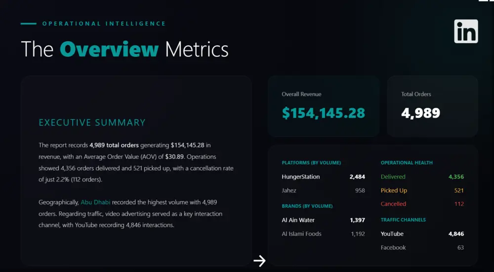
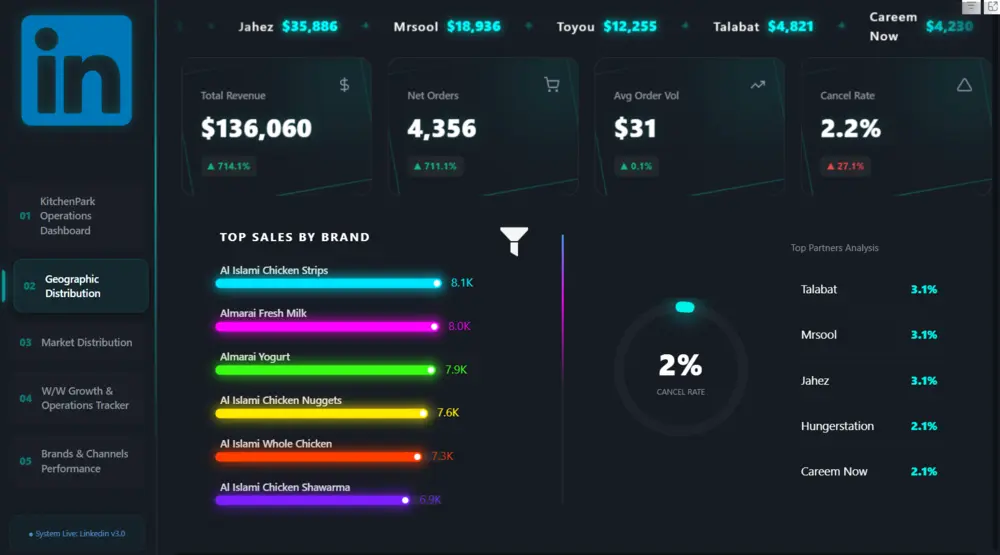
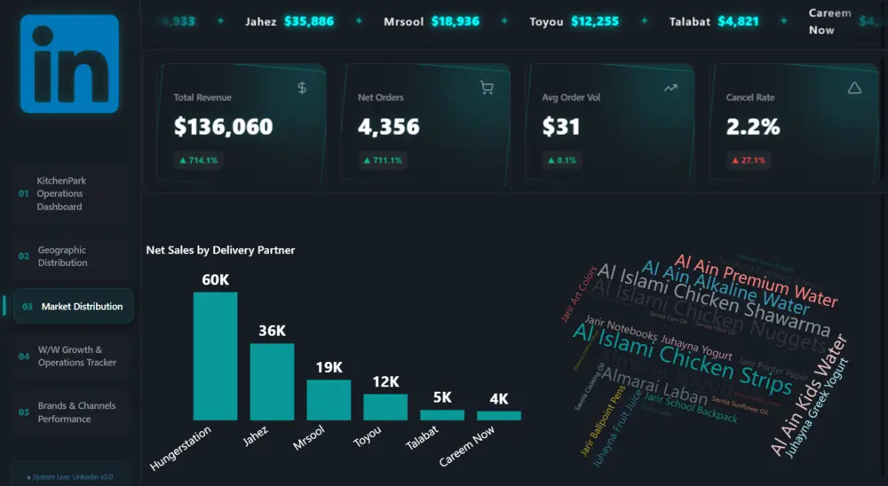
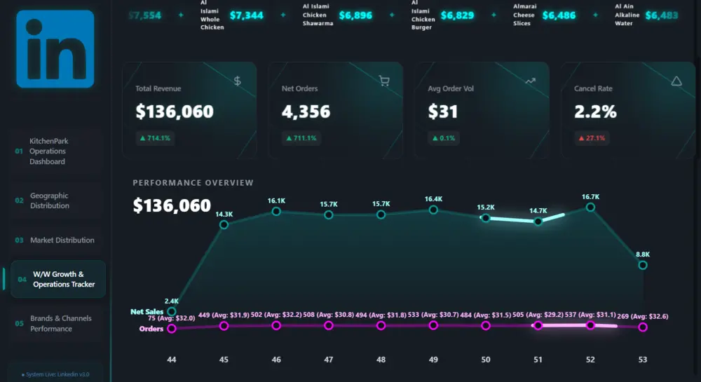
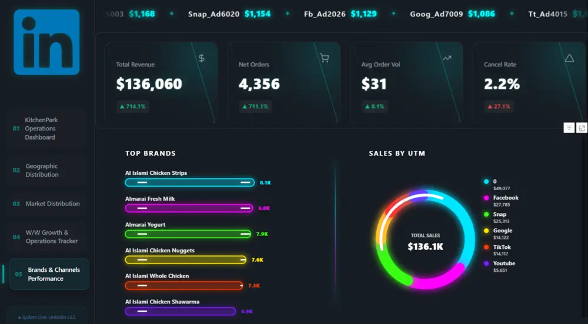

0110 HOURS
EXCEL
Advanced to Advanced
Move beyond functions into modeling, automation and decision-ready reporting.
- Microsoft 365 formulas
- Power Query
- Power Pivot & Data Model
- Advanced Pivot Tables
- Office Scripts automation
- Executive dashboards
PRIVATE 1:1 LEARNING EXPERIENCE
رحلة عملية مكثفة تجمع Excel وPower BI وHTML + Firebase — من البيانات الخام إلى Dashboard احترافي، ثم إلى نظام SaaS حقيقي قابل للاستخدام.
=LET(data, BUILD_SKILLS, CREATE_IMPACT(data))const future = build({2 data, design, systems3});THE LEARNING SYSTEM
مش ثلاث دورات منفصلة. كل محور يبني على اللي قبله حتى تصلي من التحليل إلى القرار، ومن القرار إلى الحل الرقمي.
EXCEL
Move beyond functions into modeling, automation and decision-ready reporting.
POWER BI
Build premium analytical experiences that explain what happened and what comes next.
HTML + FIREBASE
Turn business ideas into responsive systems, dashboards and usable digital solutions.
POWER BI PROJECT
خلال محور Power BI رح نبني تجربة Dashboard متكاملة مستوحاة من المستوى البصري المرفق: KPIs، تحليل جغرافي، اتجاهات أسبوعية، أداء العلامات والقنوات، وتصميم تفاعلي متماسك.





THE REAL OUTCOME
تنظيف البيانات، نمذجتها، واستخراج المعنى الحقيقي منها.
بناء قصة بصرية تساعد على الفهم واتخاذ القرار.
تقليل العمل المتكرر باستخدام Scripts وعمليات ذكية.
تحويل الفكرة إلى Dashboard أو نظام SaaS يعمل فعلياً.
YOUR WEEKLY RHYTHM
ثلاث جلسات أسبوعياً، كل جلسة ساعتان. نتعلّم، نطبّق، ونخرج في كل أسبوع بشيء حقيقي قابل للعرض والاستخدام.
THE NEXT VERSION OF YOUR SKILLSET
بعد 30 ساعة، ما رح تكوني فقط مستخدمة للأدوات. رح تعرفي كيف تربطي البيانات بالتصميم والمنطق لتبني حلولاً تحمل بصمتك.
ابدئي الرحلة